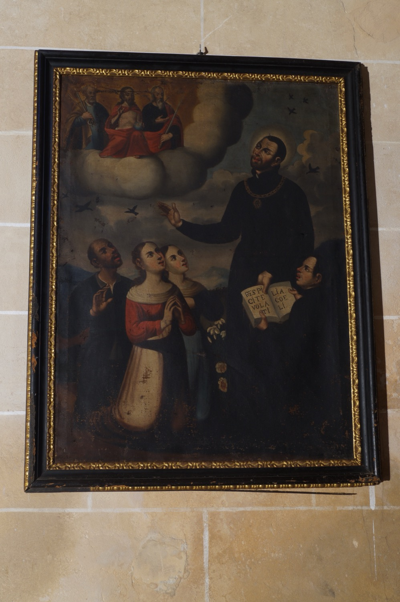

San Francisco Javier (1506-1552) fue un misionero jesuita navarro. Fue uno de los colaboradores más estrechos de san Ignacio de Loyola y formó parte del grupo de compañeros reunidos en torno a san Ignacio que acabaría dando origen a la Compañía de Jesús. Poco después de ser ordenado sacerdote se dedicó a la actividad misionera. Es conocido como “el apóstol de las Indias” porque evangelizó diversos territorios de Oriente, como la India, Ceilán, las islas Molucas y Japón.
En esta pintura, san Francisco Javier aparece vestido con el hábito negro de los jesuitas y llevando un medallón con el monograma IHS dentro de un sol radiante, emblema de la Compañía de Jesús. Está predicando a tres personas, en referencia a su labor como predicador y misionero, mientras es contemplado por tres figuras celestiales entre las nubes: de izquierda a derecha, san Pedro, con las llaves; Jesús, con un globo terráqueo; y san Pablo, con una espada. Este grupo simboliza la aprobación celestial de la predicación del santo. El libro abierto simboliza su papel como evangelizador. En él puede leerse el versículo 6:26 del evangelio de san Mateo: Respicite volatilia coeli (“Mirad las aves del cielo” en latín), en referencia a la vida de Francisco Javier como misionero totalmente abandonado a la Providencia. Las aves representadas en el cielo ilustran literalmente el versículo evangélico.